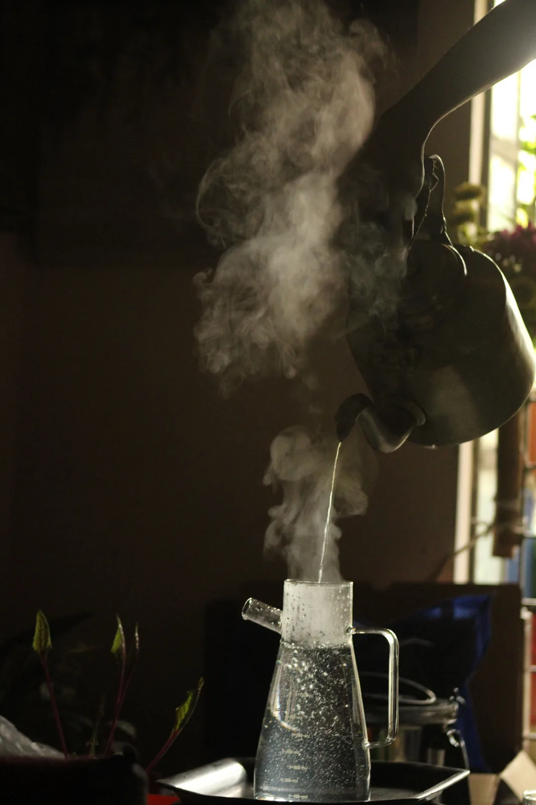

Heating and cooling of matter: $Q = cm\Delta T$
Why does the sand on a beach burn your feet already in the late morning, when the water is still cool, even though the Sun has shone on both for the same time?
Prior knowledge
- Heat is energy that is transferred because of a temperature difference, and the energy transferred is the quantity of heat $Q$chapter Internal energy, heat and conservation of energy
- Energy is conserved: the total energy of an isolated system stays constantchapter Internal energy, heat and conservation of energy
Core path: follow the steps in order. Besides calculations, the core path includes investigations, explanations and graphs. Tasks marked Optional give extra practice. Optional tasks: 5.
Think about it
On a July morning at eight o'clock, the sand on the beach and the shallow water by the shore are about equally warm. By noon the surface of the sand is so hot that you cannot stand on it barefoot, but the water has warmed by only a few degrees. The Sun has shone on the same beach for the same time, and both have received energy as heat.
If energy is transferred as heat to two substances, what decides how much the temperature of each rises?
Optional Review: heat and internal energy
Predict
Make your predictions before investigating 2 questions
Prediction 1: sand or water
Prediction 2: hot water into cold
Investigate
Simulation
How to use
Adjust the mass and initial temperature of the water, and the substance, mass and initial temperature of the object. Then press Immerse. The object descends into the water, and the graph plots the temperature of the water (blue) and of the object (orange) as a function of time. The dashed line is the equilibrium temperature $T$. When you change any value, the object rises out of the water and the experiment starts again. Speed changes only the pace of the animation, not the temperatures or the quantities of heat.
Assumptions of the model
The container is fully insulated: no heat is transferred to the surroundings or to the container itself, so the heat given out by the object is equal to the heat received by the water. The temperature of the object stays between 0 and $100\,{}^\circ\text{C}$, and the phase of neither changes. The equilibrium temperature and the quantities of heat are values calculated by the model, not measurements. The speed of the approach (time constant about $1.5\,\text{s}$) is only an illustration, not a physical model: in reality it depends on stirring and on the shape of the object.
How the calculation works
The heat capacities are $C_\text{w} = c_\text{w} m_\text{w}$ and $C_\text{o} = c_\text{o} m_\text{o}$, where $c_\text{w} = 4190\,\tfrac{\text{J}}{\text{kg}\cdot\text{K}}$. The equilibrium temperature is a weighted mean of the initial temperatures:
$$T = \frac{C_\text{w} T_\text{w} + C_\text{o} T_\text{o}}{C_\text{w} + C_\text{o}}$$
The hotter one gives out the heat $Q = c m \, |\Delta T|$ and the colder one receives the same amount; when the object is hotter, $Q = c_\text{o} m_\text{o} (T_\text{o} - T) = c_\text{w} m_\text{w} (T - T_\text{w})$. The temperature scale of the graph starts and ends at the initial temperatures rounded to tens of degrees.
Lower an object into water and follow how the temperatures of the water and the object approach each other.
Experiment 1: only the substance changes
Test prediction 1. The mass and temperature of the water and the mass and initial temperature of the object stay constant; change only the substance of the object. Record the equilibrium temperature for at least sand and water, and for metals too if you like. Press Immerse in between and watch which thermometer moves more.
Initial state: water mass = $0{.}3\,\text{kg}$, initial water temperature = 20 °C, substance, $c$ = 800 J/(kg·K), object mass = $0{.}2\,\text{kg}$, initial object temperature = 80 °C. Kept constant: water mass, initial water temperature, object mass, initial object temperature. Varied: substance, $c$.
| substance, $c$ | $T$ (°C) | $C$ $(\text{J/K})$ |
|---|
More to investigate 2 tasks
Experiment 2: only the amount of hot water changes
Test prediction 2. The object is now water at a temperature of $90\,{}^\circ\text{C}$, and the container has $0.50\,\text{kg}$ of water at a temperature of $20\,{}^\circ\text{C}$. Change only the mass of the hot water. Record the equilibrium temperature for at least two masses, for example $0.20\,\text{kg}$, $0.50\,\text{kg}$ and $0.80\,\text{kg}$. At what mass is the result the mean of the initial temperatures?
Initial state: cold water mass = $0{.}5\,\text{kg}$, initial cold water temperature = 20 °C, substance, $c$ = 4190 J/(kg·K), hot water mass = $0{.}2\,\text{kg}$, initial hot water temperature = 90 °C. Kept constant: cold water mass, initial cold water temperature, substance, $c$, initial hot water temperature. Varied: hot water mass.
| hot water mass | $T$ (°C) |
|---|
Conclusion: what decides the final temperature?
Write on the basis of your tables: why did the water object heat the water in the calorimeter more than a sand object of the same mass? At what mass was the final temperature the mean of the initial temperatures, and why? Which quantity decides whose temperature changes more?
Model answer
With the sand object the final temperature was about $27\,{}^\circ\text{C}$, with the water object about $44\,{}^\circ\text{C}$, although the masses and initial temperatures were the same. Water has a larger specific heat capacity, so $80$-degree water gives out much more energy when it cools than sand does. In experiment 2 the final temperature was the mean $55\,{}^\circ\text{C}$ when there were equal amounts of hot and cold water ($0.50\,\text{kg}$). The heat given out by the hotter one is equal to the heat received by the colder one, so the temperature changes less for the one with the larger heat capacity $C = cm$. The values are calculated by the model: in the model no heat is transferred to the surroundings, and in a real calorimeter the final temperature is slightly lower.
Assess your own answer
Tick the points your own answer already contains.
Theory
Key idea
When heat is transferred to an object and its phase does not change, its internal energy increases and its temperature rises. Experiments show that the quantity of heat needed is directly proportional both to the change in temperature and to the mass of the object: a temperature rise twice as large needs twice the heat, and twice the amount of water needs twice the heat. In addition, the heat depends on the substance. Heating one kilogram of water by one degree takes about $4.2\,\text{kJ}$, but heating one kilogram of iron takes only about $0.45\,\text{kJ}$. The coefficient that is characteristic of a substance is the specific heat capacity $c$, whose unit is J/(kg·K). It tells how much energy is needed to heat one kilogram by one kelvin, and the same amount is released when the substance cools by one kelvin.

An important reason is that the specific heat capacity of water is exceptionally large: water warms slowly in the Sun and cools slowly in the evening, whereas sand, whose $c$ is about one fifth of that of water, gets many times hotter with the same energy. In addition, the Sun heats only a thin surface layer of the sand, whereas in water the warming reaches deeper. Because of their large specific heat capacity, lakes even out the temperatures of the coast, and water is a good heat-transfer medium in heating pipes.
When a hot and a cold object are put into one insulated container, heat is transferred from the hotter to the colder one until both have the same temperature. This state is called thermal equilibrium. Energy is conserved: the heat given out by the hot object is equal to the heat received by the cold one. An insulated container in which this is measured is called a calorimeter, and the measurement is called a calorimetric measurement. With it you can determine the specific heat capacity of an unknown substance when the specific heat capacity of water is known.
Heat and thermal equilibrium
When the phase of a substance does not change, the quantity of heat needed to heat a mass $m$, or released when it cools, is
$$\begin{aligned} Q &= c m \Delta T \\ \Delta T &= T_\text{final} - T_\text{initial} \end{aligned}$$
where $Q$ is the quantity of heat (J), $c$ the specific heat capacity of the substance (J/(kg·K)), $m$ the mass (kg) and $\Delta T$ the change in temperature (K), that is, the final temperature $T_\text{final}$ minus the initial temperature $T_\text{initial}$. The change in temperature is the same in kelvins and in degrees Celsius, so $\Delta T$ can be calculated directly from Celsius temperatures. When an object warms, $\Delta T$ and $Q$ are positive; when it cools, they are negative.
The heat capacity of a whole object
$$C = c m$$
tells how many joules it takes to raise the temperature of the object by one kelvin. $C$ is the heat capacity (J/K), $c$ the specific heat capacity and $m$ the mass. An object with a large heat capacity warms and cools slowly.
In an insulated container, the heat given out by the hot object $1$ is equal to the heat received by the cold object $2$:
$$c_1 m_1 (T_1 - T) = c_2 m_2 (T - T_2)$$
where $T_1$ and $T_2$ are the initial temperatures of the objects and $T$ is the common final temperature, that is, the equilibrium temperature. Both sides of the equation are positive quantities of heat: for the hot object you calculate initial temperature minus final temperature, and for the cold object final temperature minus initial temperature. From the equation you can solve any quantity when the others are known: the final temperature, a mass or an unknown specific heat capacity.
The equilibrium temperature $T$ appears in two terms of the equation. You solve it by multiplying out the brackets, collecting the terms that contain $T$ on the same side and taking $T$ as a common factor:
$$\begin{aligned} &c_1 m_1 T_1 - c_1 m_1 T \\ \quad &= c_2 m_2 T - c_2 m_2 T_2 \\[6pt] &c_1 m_1 T_1 + c_2 m_2 T_2 \\ \quad &= c_1 m_1 T + c_2 m_2 T \\ \quad &= (c_1 m_1 + c_2 m_2)\,T \end{aligned}$$
When the equation is divided on both sides by the sum $c_1 m_1 + c_2 m_2$, you get
$$T = \frac{c_1 m_1 T_1 + c_2 m_2 T_2}{c_1 m_1 + c_2 m_2}$$
So the equilibrium temperature is a weighted mean of the initial temperatures, where the weights are the heat capacities $c_1 m_1$ and $c_2 m_2$ of the objects. You get the ordinary mean only when the heat capacities are equal.
| Substance | $c$ (J/(kg·K)) |
|---|---|
| water | 4190 |
| ice | 2100 |
| aluminium | 900 |
| sand | 800 |
| iron | 450 |
| copper | 385 |
Common misconception
Many people think that heat and temperature are the same thing, or that objects heated to the same temperature have received the same amount of energy. Heating a kilogram of water and a kilogram of iron from $20\,{}^\circ\text{C}$ to $60\,{}^\circ\text{C}$ takes almost ten times as much energy for the water. Another mistake is to calculate the equilibrium temperature as a mean. When $1.0\,\text{kg}$ of 80-degree water is poured into $3.0\,\text{kg}$ of 20-degree water, the specific heat capacity of water $c$ is on both sides of the equation and cancels:
$$\begin{aligned} &1.0\,\text{kg} \cdot (80\,{}^\circ\text{C} - T) \\ &\quad = 3.0\,\text{kg} \cdot (T - 20\,{}^\circ\text{C}) \\[6pt] &80\,{}^\circ\text{C} - T = 3T - 60\,{}^\circ\text{C} \\ &140\,{}^\circ\text{C} = 4T \\ &T = 35\,{}^\circ\text{C} \end{aligned}$$
The hot water is on the left side, as in the general equation. On the third line the equation has been divided on both sides by a kilogram and the brackets have been multiplied out. So the final result is not $50\,{}^\circ\text{C}$ but $35\,{}^\circ\text{C}$, because there is three times as much cold water as hot. The same result comes from the weighted mean: $T = (3.0\,\text{kg} \cdot 20\,{}^\circ\text{C} + 1.0\,\text{kg} \cdot 80\,{}^\circ\text{C}) : 4.0\,\text{kg} = 35\,{}^\circ\text{C}$.
A third mistake is to convert $\Delta T$ to kelvins by adding 273: a change in temperature is the same on both scales.
Summary
- The quantity of heat is proportional to the mass and to the change in temperature: $Q = c m \Delta T$. The specific heat capacity $c$ depends on the substance, and for water it is large, $4190\,\text{J/(kg}\cdot\text{K)}$.
- The heat capacity $C = cm$ tells how many joules it takes to heat the whole object by one kelvin.
- In an insulated container the heat given out by the hot object is equal to the heat received by the cold one: $c_1 m_1 (T_1 - T) = c_2 m_2 (T - T_2)$. The equilibrium temperature $T$ is solved by collecting the terms with $T$ on the same side; it is a mean weighted by the heat capacities, and usually not the ordinary mean of the initial temperatures.
- A calorimetric measurement determines the specific heat capacity of an unknown substance with the help of water.
Optional Return to your predictions
Compare your predictions with the values of the model in the experiments and with the equation $Q = cm\Delta T$. Then return to the question at the start: why does the sand on the beach get much hotter than the water during the morning, although both receive energy from the Sun? Also mention what other difference besides the substance there is in how sand and water warm.
Would you change your prediction?
Examples
Once you have studied the chapter's theory, move on to the guided examples. In the first you follow a worked solution step by step; in the next ones you make the choices yourself, and the hints help if you get stuck.
Example 1: Metal block in a calorimeter
A calorimeter contains $0.300\,\text{kg}$ of water at a temperature of $20.0\,{}^\circ\text{C}$. A metal object of mass $0.200\,\text{kg}$, heated in boiling water to a temperature of $100.0\,{}^\circ\text{C}$, is lowered into it. After stirring, the temperature settles at $24.5\,{}^\circ\text{C}$. What is the specific heat capacity of the metal? Ignore the heat capacity of the calorimeter itself and heat losses to the surroundings.
Step 1/7
Given and find. Water: $m_\text{w} = 0.300\,\text{kg}$, $T_\text{w} = 20.0\,{}^\circ\text{C}$ and from the table $c_\text{w} = 4190\,\tfrac{\text{J}}{\text{kg}\cdot\text{K}}$. Metal: $m_\text{m} = 0.200\,\text{kg}$, $T_\text{m} = 100.0\,{}^\circ\text{C}$. Equilibrium temperature $T = 24.5\,{}^\circ\text{C}$. We want the specific heat capacity of the metal $c_\text{m}$.
Step 2/7
Principle. Energy is conserved. When the calorimeter and the air take up no heat, the heat given out by the metal is equal to the heat received by the water. Each one only warms or cools and its phase does not change, so $Q = c m \Delta T$ holds for both. At the end both are at the same temperature $T$.
Step 3/7
Rearranged formula. Set the quantities of heat equal and solve for $c_\text{m}$:
$$\begin{aligned} &c_\text{m} m_\text{m} (T_\text{m} - T) \\ \quad &= c_\text{w} m_\text{w} (T - T_\text{w}) \\[6pt] c_\text{m} &= \frac{c_\text{w} m_\text{w} (T - T_\text{w})}{m_\text{m} (T_\text{m} - T)} \end{aligned}$$
Step 4/7
Unit conversions. The masses are already in kilograms. A temperature difference is the same in kelvins and in degrees Celsius, so the metal cools by $T_\text{m} - T = 75.5\,\text{K}$ and the water warms by $T - T_\text{w} = 4.5\,\text{K}$.
Step 5/7
Substitution. First calculate the numerator, that is, the heat $Q_\text{w}$ received by the water, and then divide:
$$\begin{aligned} Q_\text{w} &= c_\text{w} m_\text{w} (T - T_\text{w}) \\ &= 4190\,\tfrac{\text{J}}{\text{kg}\cdot\text{K}} \cdot 0.300\,\text{kg} \cdot 4.5\,\text{K} \\ &= 5656.5\,\text{J} \\[6pt] c_\text{m} &= \frac{Q_\text{w}}{m_\text{m} (T_\text{m} - T)} \\ &= \frac{5656.5\,\text{J}}{0.200\,\text{kg} \cdot 75.5\,\text{K}} \\ &= 374.6\,\tfrac{\text{J}}{\text{kg}\cdot\text{K}} \end{aligned}$$
Step 6/7
Result. The specific heat capacity of the metal is about $3.7 \cdot 10^2\,\tfrac{\text{J}}{\text{kg}\cdot\text{K}}$. The result is given with two significant figures, because the temperature change of the water, $4.5\,\text{K}$, is known only to two figures: if the final reading were $0.1\,\text{K}$ higher, that is $24.6\,{}^\circ\text{C}$, the result would be $383\,\text{J/(kg}\cdot\text{K)}$.
Step 7/7
Reasonableness. The value is close to the specific heat capacity of copper, $385\,\text{J/(kg}\cdot\text{K)}$, so the object is probably copper. In a lossless calorimeter a $0.200\,\text{kg}$ copper object would raise the water to $24.6\,{}^\circ\text{C}$ (try it in the simulation); the measured reading, $0.1\,\text{K}$ lower, is explained by the reading precision or by the fact that in reality some of the heat also went into the calorimeter vessel and the air. The water warmed by only $4.5\,\text{K}$ although the metal cooled by $75.5\,\text{K}$: the heat capacity of the water is
which is much more than the heat capacity of the object,
Optional Example 2: Find the error
Optional Example 3: Apply to a new situation
A bathtub contains $80.0\,\text{kg}$ of water at a temperature of $30.0\,{}^\circ\text{C}$. More hot water at a temperature of $60.0\,{}^\circ\text{C}$ is run from the tap until the temperature of the water in the tub is $38.0\,{}^\circ\text{C}$.
How many kilograms of hot water are needed? Assume that no heat is transferred to the tub or the air. Give the answer in kilograms.
Hint 1: a guiding question
Who gives out heat and who receives it? By how many kelvins does each amount of water change when the final temperature is $38.0\,{}^\circ\text{C}$?
Hint 2: what is the connection
The heat given out by the hot water is equal to the heat received by the water in the tub: $c\, m_\text{h} (T_\text{h} - T) = c\, m_\text{t} (T - T_\text{t})$. The same $c$ cancels.
Hint 3: an intermediate step
Show the solution
Given
water in the tub $m_\text{t} = 80.0\,\text{kg}$, $T_\text{t} = 30.0\,{}^\circ\text{C}$; hot water $T_\text{h} = 60.0\,{}^\circ\text{C}$; final temperature $T = 38.0\,{}^\circ\text{C}$; no heat losses
Find
the mass of the hot water $m_\text{h}$
Principle
Energy is conserved: the heat given out by the hot water is equal to the heat received by the water in the tub. Both are water, so the same $c$ cancels.
Formula
$c\, m_\text{h} (T_\text{h} - T) = c\, m_\text{t} (T - T_\text{t})$, from which
$$m_\text{h} = \frac{m_\text{t}(T - T_\text{t})}{T_\text{h} - T}$$
Conversions
The temperature differences are the same in kelvins: $T - T_\text{t} = 8.0\,\text{K}$ and $T_\text{h} - T = 22.0\,\text{K}$. The mass is already in kilograms.
Substitution
Answer
$29\,\text{kg}$
Two significant figures, because the change in temperature of the water in the tub, $8.0\,\text{K}$, is known to two figures.
Reasonableness
Less hot water is needed than there is in the tub, because its temperature changes by $22\,\text{K}$ and that of the water in the tub by only $8\,\text{K}$. Check:
In reality the tub and the air take some of the heat, so slightly more hot water is used.
Review the chapter's concepts
Cards you mark Review later collect in your review deck.
- Heat capacity
- The energy needed to raise the temperature of an object by one degree.
- Specific heat capacity
- The energy needed to raise the temperature of one kilogram by one degree.
- Quantity of heat
- The energy transferred in a change of temperature can be calculated from the mass and the specific heat capacity.$$Q = cm\Delta T$$
- Specific heat capacity of water
- Its large value means that much energy is needed to change the temperature of water.
- Mixing experiment
- In an isolated system the energy received by the parts that warm up equals the energy given up by the parts that cool.
- Heating power
- How fast energy is transferred to the object being heated.$$P = \dfrac{Q}{\Delta t}$$
- Cooling
- The temperature of a system falls when energy passes from it to the surroundings.
Exercises
Level 1 · basic practice 8 exercises
One formula or one step of reasoning. Core exercises first, the rest is extra practice.
- Exercise 7-1Core
$1.8\,\text{kg}$ of water at a temperature of $12\,{}^\circ\text{C}$ is poured into the tank of a coffee maker. The coffee maker heats the water to $96\,{}^\circ\text{C}$.
How large is the quantity of heat transferred to the water? Give the answer in megajoules.
Answer
$0.63\,\text{MJ}$
Show the solution
Given
water, $m = 1.8\,\text{kg}$, $T_\text{initial} = 12\,{}^\circ\text{C}$, $T_\text{final} = 96\,{}^\circ\text{C}$; from the table $c = 4190\,\tfrac{\text{J}}{\text{kg}\cdot\text{K}}$
Find
the quantity of heat $Q$ transferred to the water, in megajoules
Principle
The water warms and its phase does not change, so the heat transferred to it is proportional to the mass and to the change in temperature.
Formula
$Q = c m \Delta T$, where $\Delta T = T_\text{final} - T_\text{initial}$
Conversions
The change in temperature is the same in degrees Celsius and in kelvins, so
$\Delta T$$= 96\,{}^\circ\text{C} - 12\,{}^\circ\text{C}$$= 84\,\text{K}$Finally $1\,\text{MJ} = 10^6\,\text{J}$.
Substitution
$Q$$= 4190\,\tfrac{\text{J}}{\text{kg}\cdot\text{K}} \cdot 1.8\,\text{kg} \cdot 84\,\text{K}$$= 633\,528\,\text{J}$$= 0.633\,528\,\text{MJ}$Answer
$0.63\,\text{MJ}$
Two significant figures as in the mass $1.8\,\text{kg}$.
Reasonableness
Heating one kilogram by one kelvin takes about $4\,\text{kJ}$, so heating almost two kilograms by about $80\,\text{K}$ takes about $4\,\text{kJ} \cdot 2 \cdot 80 \approx 0.6\,\text{MJ}$. $Q$ is positive because the water warms.
- Exercise 7-2
A cast-iron frying pan of mass $2.4\,\text{kg}$ is lifted from the stove onto a table in a cabin. The temperature of the pan falls from $220\,{}^\circ\text{C}$ to $25\,{}^\circ\text{C}$.
How large a quantity of heat does the pan give out to the surroundings? Give the answer in kilojoules.
Answer
$210\,\text{kJ}$
Show the solution
Given
iron, $m = 2.4\,\text{kg}$, $T_\text{initial} = 220\,{}^\circ\text{C}$, $T_\text{final} = 25\,{}^\circ\text{C}$; from the table $c = 450\,\tfrac{\text{J}}{\text{kg}\cdot\text{K}}$
Find
the quantity of heat given out by the pan, in kilojoules
Principle
The pan cools and its phase does not change, so it gives out a quantity of heat that is proportional to the mass and to the drop in temperature. The heat given out is stated as a positive number.
Formula
Heat given out $Q_\text{out} = c m (T_\text{initial} - T_\text{final})$
Conversions
The drop in temperature is $220\,{}^\circ\text{C} - 25\,{}^\circ\text{C} = 195\,\text{K}$, the same in kelvins. Finally $1\,\text{kJ} = 1000\,\text{J}$.
Substitution
$Q_\text{out}$$= 450\,\tfrac{\text{J}}{\text{kg}\cdot\text{K}} \cdot 2.4\,\text{kg} \cdot 195\,\text{K}$$= 210\,600\,\text{J}$$= 210.6\,\text{kJ}$Answer
$210\,\text{kJ}$
Two significant figures as in the mass $2.4\,\text{kg}$.
Reasonableness
The $c$ of iron is small, so even a heavy pan, despite the large cooling, gives out only about a third of the energy needed to heat the $1.8\,\text{kg}$ of water in the coffee maker ($0.63\,\text{MJ}$).
- Exercise 7-3
A children's sandpit contains $50\,\text{kg}$ of sand. During the morning the Sun heats the sand from $14\,{}^\circ\text{C}$ to $32\,{}^\circ\text{C}$.
How large is the quantity of heat transferred to the sand? Give the answer in kilojoules.
Answer
$720\,\text{kJ}$
Show the solution
Given
sand, $m = 50\,\text{kg}$, $T_\text{initial} = 14\,{}^\circ\text{C}$, $T_\text{final} = 32\,{}^\circ\text{C}$; from the table $c = 800\,\tfrac{\text{J}}{\text{kg}\cdot\text{K}}$
Find
the quantity of heat $Q$ transferred to the sand, in kilojoules
Principle
The sand warms and its phase does not change, so the heat transferred to it is proportional to the mass and to the change in temperature.
Formula
$Q = c m \Delta T$, where $\Delta T = T_\text{final} - T_\text{initial}$
Conversions
$\Delta T$$= 32\,{}^\circ\text{C} - 14\,{}^\circ\text{C}$$= 18\,\text{K}$the same in kelvins. Finally $1\,\text{kJ} = 1000\,\text{J}$.
Substitution
$Q$$= 800\,\tfrac{\text{J}}{\text{kg}\cdot\text{K}} \cdot 50\,\text{kg} \cdot 18\,\text{K}$$= 720\,000\,\text{J}$$= 720\,\text{kJ}$Answer
$720\,\text{kJ}$
Two significant figures as in the mass $50\,\text{kg}$ and in the change $18\,\text{K}$.
Reasonableness
The same heat would raise the temperature of $50\,\text{kg}$ of water by only about $3.4\,\text{K}$, because the $c$ of water is five times as large. That is why sand on a beach gets hot faster than water.
- Exercise 7-4
A cabin hot tub contains $1200\,\text{kg}$ of water. During the night the water cools from $38.0\,{}^\circ\text{C}$ to $31.0\,{}^\circ\text{C}$.
How large is the quantity of heat $Q$ transferred to the water? Give the answer with its sign in megajoules (a negative $Q$ means that the water gives out heat).
Answer
$-35\,\text{MJ}$
Show the solution
Given
water, $m = 1200\,\text{kg}$, $T_\text{initial} = 38.0\,{}^\circ\text{C}$, $T_\text{final} = 31.0\,{}^\circ\text{C}$; from the table $c = 4190\,\tfrac{\text{J}}{\text{kg}\cdot\text{K}}$
Find
the quantity of heat $Q$ transferred to the water, with its sign, in megajoules
Principle
The water cools and its phase does not change. When $\Delta T$ is calculated as final minus initial, the formula gives a negative $Q$ for cooling: the water gives out heat.
Formula
$Q = c m \Delta T$, where $\Delta T = T_\text{final} - T_\text{initial}$
Conversions
$\Delta T$$= 31.0\,{}^\circ\text{C} - 38.0\,{}^\circ\text{C}$$= -7.0\,\text{K}$the same in kelvins. Finally $1\,\text{MJ} = 10^6\,\text{J}$.
Substitution
$Q$$= 4190\,\tfrac{\text{J}}{\text{kg}\cdot\text{K}} \cdot 1200\,\text{kg} \cdot (-7.0\,\text{K})$$= -35\,196\,000\,\text{J}$$\approx -35.2\,\text{MJ}$Answer
$-35\,\text{MJ}$
Two significant figures, because the change in temperature $7.0\,\text{K}$ is known to two figures.
Reasonableness
$Q$ is negative because the water cools. The tub holds a lot of water, so even a cooling of a few kelvins releases tens of megajoules:
$4\,\tfrac{\text{kJ}}{\text{kg}\cdot\text{K}} \cdot 1200\,\text{kg} \cdot 7\,\text{K}$$\approx 34\,\text{MJ}$ - Exercise 7-5
A $0.50\,\text{kg}$ bag of ice from the freezer is put into a cool bag. The temperature of the ice rises from $-22\,{}^\circ\text{C}$ to $-4.0\,{}^\circ\text{C}$, and the ice does not melt yet.
How large is the quantity of heat transferred to the ice? Give the answer in kilojoules.
Answer
$19\,\text{kJ}$
Show the solution
Given
ice, $m = 0.50\,\text{kg}$, $T_\text{initial} = -22\,{}^\circ\text{C}$, $T_\text{final} = -4.0\,{}^\circ\text{C}$; from the table $c = 2100\,\tfrac{\text{J}}{\text{kg}\cdot\text{K}}$
Find
the quantity of heat $Q$ transferred to the ice, in kilojoules
Principle
The ice warms but does not melt, because the final temperature is below $0\,{}^\circ\text{C}$. So it is enough to use $Q = c m \Delta T$ with the specific heat capacity of ice, and no latent heat of fusion is needed.
Formula
$Q = c m \Delta T$, where $\Delta T = T_\text{final} - T_\text{initial}$
Conversions
$\Delta T$$= -4.0\,{}^\circ\text{C} - (-22\,{}^\circ\text{C})$$= 18\,\text{K}$the same in kelvins. Finally $1\,\text{kJ} = 1000\,\text{J}$.
Substitution
$Q$$= 2100\,\tfrac{\text{J}}{\text{kg}\cdot\text{K}} \cdot 0.50\,\text{kg} \cdot 18\,\text{K}$$= 18\,900\,\text{J}$$= 18.9\,\text{kJ}$Answer
$19\,\text{kJ}$
Two significant figures as in the mass $0.50\,\text{kg}$.
Reasonableness
The temperature rises, so $Q$ is positive. Be careful when subtracting readings with minus signs: the change is $18\,\text{K}$, not $26\,\text{K}$. The $c$ of ice is about half that of water, so making the same change in temperature in $0.50\,\text{kg}$ of liquid water would take about twice the heat.
- Exercise 7-6Core
At the beach, sunlight gives $1.0\,\text{kg}$ of water and $1.0\,\text{kg}$ of dry sand the same quantity of heat. The sand warms clearly more than the water. What explains this?
Answer
The specific heat capacity of water is greater, so the same quantity of heat raises its temperature less.
Show the solution
Find
why the sand warms more than the water when the masses and the quantities of heat are the same
Principle
When the phase does not change, the change in temperature is $\Delta T = \dfrac{Q}{c m}$. With the same $Q$ and $m$, $\Delta T$ depends only on the specific heat capacity $c$: the greater $c$ is, the smaller $\Delta T$ is.
Model answer
The specific heat capacity of water, $4190\,\tfrac{\text{J}}{\text{kg}\cdot\text{K}}$, is greater than that of sand, $800\,\tfrac{\text{J}}{\text{kg}\cdot\text{K}}$, so the same quantity of heat raises the temperature of the water less than that of the sand. The explanation is not density, because the masses are the same and density does not appear in the formula. Reflection does not explain the difference either, because in the task both receive the same quantity of heat. The substance does matter, since $c$ is part of the formula $Q = c m \Delta T$.
- Exercise 7-7
A copper coffee pot has a mass of $0.50\,\text{kg}$. The pot receives a quantity of heat of $15\,\text{kJ}$ from the stove, and no heat is transferred from the pot to the surroundings.
By how many kelvins does the temperature of the pot rise?
Answer
$78\,\text{K}$
Show the solution
Given
copper, $m = 0.50\,\text{kg}$, $Q = 15\,\text{kJ}$; from the table $c = 385\,\tfrac{\text{J}}{\text{kg}\cdot\text{K}}$
Find
the rise in temperature $\Delta T$ in kelvins
Principle
The pot warms and its phase does not change, and no heat is transferred to the surroundings, so the whole quantity of heat $Q$ raises the temperature of the pot. In the formula $Q = c m \Delta T$ the unknown is $\Delta T$.
Formula
$Q = c m \Delta T$, so $\Delta T = \dfrac{Q}{c m}$
Conversions
$15\,\text{kJ}$$= 15 \cdot 1000\,\text{J}$$= 15\,000\,\text{J}$Substitution
$\Delta T$$= \dfrac{15\,000\,\text{J}}{385\,\tfrac{\text{J}}{\text{kg}\cdot\text{K}} \cdot 0.50\,\text{kg}}$$= 77.9\,\text{K}$Answer
$78\,\text{K}$
Two significant figures as in the mass $0.50\,\text{kg}$ and the quantity of heat $15\,\text{kJ}$.
Reasonableness
Check by calculating back:
$385\,\tfrac{\text{J}}{\text{kg}\cdot\text{K}} \cdot 0.50\,\text{kg} \cdot 77.9\,\text{K}$$\approx 15\,000\,\text{J}$as in the given quantity of heat. The $c$ of copper is small, so a pot of half a kilogram warms by tens of kelvins with just $15\,\text{kJ}$.
- Exercise 7-8
An aluminium saucepan has a mass of $0.60\,\text{kg}$.
a) Calculate the heat capacity $C$ of the saucepan.
b) How large a quantity of heat is needed to heat the saucepan from $18\,{}^\circ\text{C}$ to $78\,{}^\circ\text{C}$? Give the result of part b) in kilojoules in the answer box.
Answer
$32\,\text{kJ}$
Show the solution
Given
aluminium, $m = 0.60\,\text{kg}$, $T_\text{initial} = 18\,{}^\circ\text{C}$, $T_\text{final} = 78\,{}^\circ\text{C}$; from the table $c = 900\,\tfrac{\text{J}}{\text{kg}\cdot\text{K}}$
Find
a) the heat capacity $C$; b) the quantity of heat $Q$ needed for the heating, in kilojoules
Principle
The heat capacity $C = c m$ tells how much energy is needed to heat the whole saucepan by one kelvin. The saucepan warms and its phase does not change, so $Q = C \Delta T$.
Formula
$C = c m$ and $Q = C \Delta T$, where $\Delta T = T_\text{final} - T_\text{initial}$
Conversions
$\Delta T$$= 78\,{}^\circ\text{C} - 18\,{}^\circ\text{C}$$= 60\,\text{K}$the same in kelvins. Finally $1\,\text{kJ} = 1000\,\text{J}$.
Substitution
$C$$= 900\,\tfrac{\text{J}}{\text{kg}\cdot\text{K}} \cdot 0.60\,\text{kg}$$= 540\,\tfrac{\text{J}}{\text{K}}$$Q$$= 540\,\tfrac{\text{J}}{\text{K}} \cdot 60\,\text{K}$$= 32\,400\,\text{J}$$= 32.4\,\text{kJ}$Answer
$32\,\text{kJ}$
Two significant figures as in the mass $0.60\,\text{kg}$. The heat capacity is $540\,\text{J/K}$.
Reasonableness
Making the same change in temperature in $0.60\,\text{kg}$ of water would take
$4190\,\tfrac{\text{J}}{\text{kg}\cdot\text{K}} \cdot 0.60\,\text{kg} \cdot 60\,\text{K}$$= 150.8\,\text{kJ}$that is, about $4.7$ times the heat, because the $c$ of water is about $4.7$ times that of aluminium.
Level 2 · applied practice 8 exercises
Two steps, working with measured data, a unit conversion or rearranging a formula. Core exercises first, the rest is extra practice.
- Exercise 7-9Core
$160\,\text{g}$ of water at a temperature of $95\,{}^\circ\text{C}$ is poured into a mug. The tea is too hot to drink, so $40\,\text{g}$ of cold water at a temperature of $8.0\,{}^\circ\text{C}$ is added.
What is the temperature of the water after mixing? Assume that no heat is transferred to the mug or the air.
Answer
$78\,{}^\circ\text{C}$
Show the solution
Given
hot water $m_1 = 160\,\text{g}$, $T_1 = 95\,{}^\circ\text{C}$; cold water $m_2 = 40\,\text{g}$, $T_2 = 8.0\,{}^\circ\text{C}$; both are water, no heat losses
Find
the equilibrium temperature $T$
Principle
Energy is conserved: when no heat is transferred to the mug or the air, the heat given out by the hot water is equal to the heat received by the cold water. At the end both have the same temperature $T$.
Formula
$c m_1 (T_1 - T) = c m_2 (T - T_2)$. The same $c$ cancels, and $T$ can be solved:
$T$$= \dfrac{m_1 T_1 + m_2 T_2}{m_1 + m_2}$Conversions
The grams do not need to be converted to kilograms, because the mass is in both the numerator and the denominator and the unit cancels. The temperatures can be substituted in degrees Celsius: the equilibrium equation contains only temperature differences, and in the solved formula the sum of the weights is in the denominator, so shifting the scale shifts the result by the same amount.
Substitution
$T$$= \dfrac{160\,\text{g} \cdot 95\,{}^\circ\text{C} + 40\,\text{g} \cdot 8.0\,{}^\circ\text{C}}{160\,\text{g} + 40\,\text{g}}$$= \dfrac{15\,200 + 320}{200}\,{}^\circ\text{C}$$= 77.6\,{}^\circ\text{C}$Answer
$78\,{}^\circ\text{C}$
Two significant figures as in the temperature $95\,{}^\circ\text{C}$ and the mass $40\,\text{g}$.
Reasonableness
The result is between the initial temperatures and close to $95\,{}^\circ\text{C}$, because there is four times as much hot water. The energy balance holds: $160\,\text{g} \cdot 17.4\,\text{K} = 40\,\text{g} \cdot 69.6\,\text{K}$.
- Exercise 7-10
An electric heater heats a metal object of mass $0.50\,\text{kg}$ at a constant power of $100\,\text{W}$. The graph shows the temperature of the object as a function of time.
What is the specific heat capacity of the metal? Read the values you need from the graph and assume that all the energy of the heater is transferred to the object.
Answer
$900\,\tfrac{\text{J}}{\text{kg}\cdot\text{K}}$
Show the solution
Given
power $P = 100\,\text{W}$, mass of the object $m = 0.50\,\text{kg}$, temperature as a function of time in the graph; all the energy of the heater is transferred to the object
Find
the specific heat capacity of the metal $c$
Principle
Energy is conserved: when all the energy of the heater is transferred to the object, the energy $Pt$ supplied by the heater in the time $t$ is equal to the heat needed to heat the object, $cm\Delta T$. The graph gives the time and the change in temperature.
Reading the graph
The line starts at the grid intersection $(0\,\text{s}$; $20\,{}^\circ\text{C})$ and ends at the intersection $(180\,\text{s}$; $60\,{}^\circ\text{C})$. So the heating time is
$t$$= 180\,\text{s} - 0\,\text{s}$$= 180\,\text{s}$and the change in temperature is
$\Delta T$$= 60\,{}^\circ\text{C} - 20\,{}^\circ\text{C}$$= 40\,\text{K}$Formula
$Pt = cm\Delta T$, so $c = \dfrac{Pt}{m\Delta T}$
Conversions
Not needed: $1\,\text{W} \cdot 1\,\text{s} = 1\,\text{J}$. The difference of temperatures is the same in degrees Celsius as in kelvins.
Substitution
$c$$= \dfrac{100\,\text{W} \cdot 180\,\text{s}}{0.50\,\text{kg} \cdot 40\,\text{K}}$$= \dfrac{18\,000\,\text{J}}{20\,\text{kg}\cdot\text{K}}$$= 900\,\tfrac{\text{J}}{\text{kg}\cdot\text{K}}$Answer
$900\,\tfrac{\text{J}}{\text{kg}\cdot\text{K}}$
Two significant figures as in the mass $0.50\,\text{kg}$. The values of the graph are read precisely from the grid, so $870\ldots930\,\tfrac{\text{J}}{\text{kg}\cdot\text{K}}$ is accepted.
Reasonableness
The value is the same as the specific heat capacity of aluminium in the table, so the object may be aluminium. It is clearly smaller than that of water, $4190\,\tfrac{\text{J}}{\text{kg}\cdot\text{K}}$, which fits the fact that a metal warms up quickly. Units: $\dfrac{\text{J}}{\text{kg}\cdot\text{K}}$.
- Exercise 7-11
A hot-water tank in a cabin contains $80\,\text{kg}$ of water at a temperature of $9.0\,{}^\circ\text{C}$. The electric resistor of the tank gives out a quantity of heat of $15\,\text{MJ}$ to the water.
What is the final temperature of the water, when heat losses are not taken into account?
Answer
$54\,{}^\circ\text{C}$
Show the solution
Given
water $m = 80\,\text{kg}$, $T_\text{initial} = 9.0\,{}^\circ\text{C}$, $Q = 15\,\text{MJ}$; from the table $c = 4190\,\tfrac{\text{J}}{\text{kg}\cdot\text{K}}$; no heat losses
Find
the final temperature $T_\text{final}$
Principle
All the heat given out by the resistor is transferred to the water and increases its internal energy, and the water warms without boiling, so $Q = c m \Delta T$. First solve the change in temperature, then add it to the initial temperature.
Formula
$\Delta T = \dfrac{Q}{c m}$, so
$T_\text{final}$$= T_\text{initial} + \dfrac{Q}{c m}$Conversions
$Q$$= 15\,\text{MJ}$$= 15 \cdot 10^6\,\text{J}$$= 15\,000\,000\,\text{J}$The change obtained in kelvins is added directly to the Celsius reading, because the steps of the scales are the same.
Substitution
$\Delta T$$= \dfrac{15\,000\,000\,\text{J}}{4190\,\tfrac{\text{J}}{\text{kg}\cdot\text{K}} \cdot 80\,\text{kg}}$$= 44.75\,\text{K}$so
$T_\text{final}$$= 9.0\,{}^\circ\text{C} + 44.75\,{}^\circ\text{C}$$= 53.75\,{}^\circ\text{C}$Answer
$54\,{}^\circ\text{C}$
Two significant figures as in the heat $15\,\text{MJ}$ and the mass $80\,\text{kg}$.
Reasonableness
The change in temperature is added to the initial temperature, so $45\,\text{K}$ alone is not an acceptable answer. About $54\,{}^\circ\text{C}$ is a typical temperature for a hot-water tank, and the water stays liquid.
- Exercise 7-12
An aluminium ladle of mass $0.25\,\text{kg}$ and temperature $95\,{}^\circ\text{C}$ has warmed up on the sauna benches. The ladle is dropped into a bucket that contains $0.40\,\text{kg}$ of water at a temperature of $18\,{}^\circ\text{C}$.
What is the common final temperature of the water and the ladle? Assume that no heat is transferred to the bucket or the air.
Answer
$27\,{}^\circ\text{C}$
Show the solution
Given
aluminium $m_1 = 0.25\,\text{kg}$, $T_1 = 95\,{}^\circ\text{C}$; water $m_2 = 0.40\,\text{kg}$, $T_2 = 18\,{}^\circ\text{C}$; from the table $c_1 = 900\,\tfrac{\text{J}}{\text{kg}\cdot\text{K}}$, $c_2 = 4190\,\tfrac{\text{J}}{\text{kg}\cdot\text{K}}$; no heat losses
Find
the common final temperature $T$
Principle
Energy is conserved: the heat given out by the ladle is equal to the heat received by the water, and at the end both have the same temperature. The substances are different, so the specific heat capacities do not cancel.
Formula
$c_1 m_1 (T_1 - T) = c_2 m_2 (T - T_2)$, from which
$T$$= \dfrac{c_1 m_1 T_1 + c_2 m_2 T_2}{c_1 m_1 + c_2 m_2}$Conversions
The masses are already in kilograms. The temperatures can be substituted in degrees Celsius: the equilibrium equation contains only temperature differences, and in the solved formula the sum of the weights is in the denominator, so shifting the scale shifts the result by the same amount.
Substitution
$c_1 m_1$$= 900\,\tfrac{\text{J}}{\text{kg}\cdot\text{K}} \cdot 0.25\,\text{kg}$$= 225\,\tfrac{\text{J}}{\text{K}}$$c_2 m_2$$= 4190\,\tfrac{\text{J}}{\text{kg}\cdot\text{K}} \cdot 0.40\,\text{kg}$$= 1676\,\tfrac{\text{J}}{\text{K}}$so
$T$$= \dfrac{225\,\tfrac{\text{J}}{\text{K}} \cdot 95\,{}^\circ\text{C} + 1676\,\tfrac{\text{J}}{\text{K}} \cdot 18\,{}^\circ\text{C}}{1901\,\tfrac{\text{J}}{\text{K}}}$$= 27.11\,{}^\circ\text{C}$Answer
$27\,{}^\circ\text{C}$
Two significant figures as in the masses.
Reasonableness
The heat capacity of the water is about 7.5 times that of the ladle, so the ladle cools by about $68\,\text{K}$ but the water warms by only about $9\,\text{K}$. The mean of the temperatures, $56.5\,{}^\circ\text{C}$, would be wrong.
- Exercise 7-13Core
In a calorimeter, $0.50\,\text{kg}$ of an unknown liquid is heated with an electric resistor at a constant power of $100\,\text{W}$. The temperature is measured at one-minute intervals, and the results are in the table (example data). Assume that all the energy of the resistor is transferred to the liquid.
a) In the temperature–time graph, draw a straight line that fits the points. The line passes approximately through the points $(0\,\text{s};\ 20.0\,{}^\circ\text{C})$ and $(300\,\text{s};\ 34.5\,{}^\circ\text{C})$. Use the slope of the line to calculate the specific heat capacity of the liquid.
b) Which liquid is it? Justify your answer with the $c$ values of the table.
c) Name one way to reduce heat losses in an experiment like this and justify why it improves the result.
Give the result of part a) in the answer box.
Temperature of the liquid during heating (example data) $t\,(\text{s})$ $T\,({}^\circ\text{C})$ 0 20.0 60 22.8 120 25.8 180 28.9 240 31.6 300 34.5 Answer
$4100\,\tfrac{\text{J}}{\text{kg}\cdot\text{K}}$
Show the solution
Given
$m = 0.50\,\text{kg}$, $P = 100\,\text{W}$; the ends of the line $(0\,\text{s}$; $20.0\,{}^\circ\text{C})$ and $(300\,\text{s}$; $34.5\,{}^\circ\text{C})$; all the energy of the resistor is transferred to the liquid
Find
the specific heat capacity of the liquid $c$ in $\tfrac{\text{J}}{\text{kg}\cdot\text{K}}$
Principle
At constant power the quantity of heat transferred to the liquid is $Q = P t$. When the phase does not change, $Q = c m \Delta T$, so $P t = c m \Delta T$.
Reading the graph
The points lie close to the line: the line gives $25.8\,{}^\circ\text{C}$ at $120\,\text{s}$ and $31.6\,{}^\circ\text{C}$ at $240\,\text{s}$, as in the table. The ends of the line give the change in temperature
$\Delta T$$= 34.5\,{}^\circ\text{C} - 20.0\,{}^\circ\text{C}$$= 14.5\,\text{K}$in the time $\Delta t = 300\,\text{s}$, so the slope is
$\dfrac{\Delta T}{\Delta t}$$= \dfrac{14.5\,\text{K}}{300\,\text{s}}$$= 0.0483\,\tfrac{\text{K}}{\text{s}}$Formula
$P t = c m \Delta T$, so
$c$$= \dfrac{P}{m} \cdot \dfrac{\Delta t}{\Delta T}$Conversions
The power $100\,\text{W} = 100\,\tfrac{\text{J}}{\text{s}}$ and the time in seconds are in SI units, so no conversions are needed. The change in temperature is the same in degrees Celsius and in kelvins.
Substitution
$c$$= \dfrac{100\,\tfrac{\text{J}}{\text{s}}}{0.50\,\text{kg} \cdot 0.0483\,\tfrac{\text{K}}{\text{s}}}$$= 4138\,\tfrac{\text{J}}{\text{kg}\cdot\text{K}}$Answer
$4100\,\tfrac{\text{J}}{\text{kg}\cdot\text{K}}$
Two significant figures as in the mass $0.50\,\text{kg}$. b) The liquid is water, because the table value $4190\,\tfrac{\text{J}}{\text{kg}\cdot\text{K}}$ differs from the result by only about $1\,\%$, and the values of the other substances in the table ($2100$ or less) are not close. c) Heat losses can be reduced with insulation and a lid on the calorimeter: then heat does not escape to the surroundings and the liquid does not evaporate, so a larger share of the energy of the resistor raises the temperature of the liquid and $c$ does not come out too large.
Reasonableness
Energy balance: the resistor gives $100\,\text{W} \cdot 300\,\text{s} = 30\,000\,\text{J}$, and the liquid receives
$4190\,\tfrac{\text{J}}{\text{kg}\cdot\text{K}} \cdot 0.50\,\text{kg} \cdot 14.5\,\text{K}$$= 30\,378\,\text{J}$The numbers differ by about $1\,\%$, which is the size of the scatter of the measurements, so the losses in this interval are small.
- Exercise 7-14
Two liquids, A and B, are heated in two identical calorimeters with an electric resistor of the same power. Each contains $0.40\,\text{kg}$ of liquid. One liquid is water and the other is oil. The temperatures are measured at half-minute intervals (example data). Assume that all the energy of the resistor is transferred to the liquid.
a) Which liquid is water? Justify your answer.
b) Calculate the specific heat capacity of the oil using the table value for water. Compare the rises in temperature of the liquids in $120\,\text{s}$.
Give the result of part b) in the answer box.
Temperatures of the liquids during heating (example data) $t\,(\text{s})$ $T_\text{A}\,({}^\circ\text{C})$ $T_\text{B}\,({}^\circ\text{C})$ 0 20.0 20.0 30 24.6 22.4 60 29.0 24.4 90 33.6 26.9 120 38.1 29.0 Answer
$2100\,\tfrac{\text{J}}{\text{kg}\cdot\text{K}}$
Show the solution
Given
in each $m = 0.40\,\text{kg}$, the same power $P$ and the same time; in $120\,\text{s}$ the temperature of liquid A rises from $20.0\,{}^\circ\text{C}$ to $38.1\,{}^\circ\text{C}$ and that of liquid B from $20.0\,{}^\circ\text{C}$ to $29.0\,{}^\circ\text{C}$; from the table $c_\text{w} = 4190\,\tfrac{\text{J}}{\text{kg}\cdot\text{K}}$ for water
Find
a) which liquid is water; b) the specific heat capacity of the oil $c_\text{oil}$
Principle
The same power in the same time gives both liquids the same quantity of heat $Q$, and the masses are the same. Since $Q = c m \Delta T$, the product $c\,\Delta T$ is the same for both, so the liquid with the greater $c$ warms less.
Reading the graph
The temperatures in the table rise steadily: liquid A warms by about $4.5\,\text{K}$ and liquid B by about $2.3\,\text{K}$ in each $30\,\text{s}$ interval. So in the whole $120\,\text{s}$ the changes are
$\Delta T_\text{A}$$= 38.1\,{}^\circ\text{C} - 20.0\,{}^\circ\text{C}$$= 18.1\,\text{K}$$\Delta T_\text{B}$$= 29.0\,{}^\circ\text{C} - 20.0\,{}^\circ\text{C}$$= 9.0\,\text{K}$Liquid B warms more slowly, so B is water and A is oil.
Formula
$c_\text{oil}\, m\, \Delta T_\text{A} = c_\text{w}\, m\, \Delta T_\text{B}$, so
$c_\text{oil}$$= c_\text{w} \cdot \dfrac{\Delta T_\text{B}}{\Delta T_\text{A}}$Conversions
The mass $m$ and the quantity of heat $Q$ cancel, so no conversions are needed. The change in temperature is the same in degrees Celsius and in kelvins.
Substitution
$c_\text{oil}$$= 4190\,\tfrac{\text{J}}{\text{kg}\cdot\text{K}} \cdot \dfrac{9.0\,\text{K}}{18.1\,\text{K}}$$= 2083\,\tfrac{\text{J}}{\text{kg}\cdot\text{K}}$Answer
$2100\,\tfrac{\text{J}}{\text{kg}\cdot\text{K}}$
Two significant figures as in the mass $0.40\,\text{kg}$ and the change $9.0\,\text{K}$.
Reasonableness
The oil warms about $2.0$ times as much as the water ($18.1\,\text{K} : 9.0\,\text{K} \approx 2.0$), so its $c$ is about half that of water: $4190 : 2 \approx 2100$. The result is plausible, because water has the greatest specific heat capacity of the common liquids.
- Exercise 7-15
A $0.20\,\text{kg}$ copper object at a temperature of $100\,{}^\circ\text{C}$ is dropped into an insulated vessel that contains $0.50\,\text{kg}$ of water at a temperature of $20\,{}^\circ\text{C}$. The heat capacity of the vessel itself and the heat losses are ignored.
The student's solution: “The temperatures even out, so the final temperature is the mean of the initial temperatures: $(100 + 20) : 2 = 60\,{}^\circ\text{C}$.”
a) Explain why the student's solution is wrong.
b) Calculate the correct final temperature.
Give the result of part b) in the answer box.
Answer
$23\,{}^\circ\text{C}$
Show the solution
Given
water $m_\text{w} = 0.50\,\text{kg}$, $T_\text{w} = 20\,{}^\circ\text{C}$; copper $m_\text{c} = 0.20\,\text{kg}$, $T_\text{c} = 100\,{}^\circ\text{C}$; from the table $c_\text{w} = 4190\,\tfrac{\text{J}}{\text{kg}\cdot\text{K}}$ and $c_\text{c} = 385\,\tfrac{\text{J}}{\text{kg}\cdot\text{K}}$; no heat losses
Find
a) the error of the student; b) the equilibrium temperature $T$
Principle
In an insulated vessel the heat given out by the copper is equal to the heat received by the water. The student's mean would be correct only if the heat capacities $c m$ of the objects were equal. Here the heat capacity of the water is many times that of the copper, so the equilibrium temperature is close to the initial temperature of the water, not halfway.
Formula
$c_\text{c} m_\text{c} (T_\text{c} - T)$$= c_\text{w} m_\text{w} (T - T_\text{w})$so
$T$$= \dfrac{c_\text{c} m_\text{c} T_\text{c} + c_\text{w} m_\text{w} T_\text{w}}{c_\text{c} m_\text{c} + c_\text{w} m_\text{w}}$Conversions
The heat capacities are
$c_\text{c} m_\text{c}$$= 385\,\tfrac{\text{J}}{\text{kg}\cdot\text{K}} \cdot 0.20\,\text{kg}$$= 77\,\tfrac{\text{J}}{\text{K}}$$c_\text{w} m_\text{w}$$= 4190\,\tfrac{\text{J}}{\text{kg}\cdot\text{K}} \cdot 0.50\,\text{kg}$$= 2095\,\tfrac{\text{J}}{\text{K}}$The temperatures can be substituted in degrees Celsius, because the result is a weighted mean.
Substitution
The numerator is
$77\,\tfrac{\text{J}}{\text{K}} \cdot 100\,{}^\circ\text{C} + 2095\,\tfrac{\text{J}}{\text{K}} \cdot 20\,{}^\circ\text{C}$$= 49\,600\,\text{J}$and the denominator
$77\,\tfrac{\text{J}}{\text{K}} + 2095\,\tfrac{\text{J}}{\text{K}}$$= 2172\,\tfrac{\text{J}}{\text{K}}$so
$T$$= \dfrac{49\,600\,\text{J}}{2172\,\tfrac{\text{J}}{\text{K}}}$$= 22.84\,{}^\circ\text{C}$Answer
$23\,{}^\circ\text{C}$
Two significant figures as in the mass $0.20\,\text{kg}$ and the temperature $20\,{}^\circ\text{C}$.
Reasonableness
The result is between the initial temperatures and only about $2.8\,\text{K}$ above the initial temperature of the water. Energy balance: the copper gives out $77\,\tfrac{\text{J}}{\text{K}} \cdot 77.2\,\text{K} \approx 5.9\,\text{kJ}$ and the water receives
$2095\,\tfrac{\text{J}}{\text{K}} \cdot 2.84\,\text{K}$$\approx 5.9\,\text{kJ}$The student's $60\,{}^\circ\text{C}$ would require the water to receive $2095\,\tfrac{\text{J}}{\text{K}} \cdot 40\,\text{K} = 84\,\text{kJ}$, but the copper can give out at most $77\,\tfrac{\text{J}}{\text{K}} \cdot 80\,\text{K} \approx 6\,\text{kJ}$.
- Exercise 7-16
Sample data: an iron plate of mass $3.0\,\text{kg}$ taken out of an oven cools from $220\,{}^\circ\text{C}$ to $40\,{}^\circ\text{C}$. The specific heat capacity of iron is $450\,\tfrac{\text{J}}{\text{kg}\cdot\text{K}}$. A student finds out how much energy is transferred between the plate and the surroundings and in which direction.
Line 1: $\Delta T = 40\,{}^\circ\text{C} - 220\,{}^\circ\text{C}$, that is $\Delta T = -180\,\text{K}$.
Line 2: $Q = c m \Delta T$.
Line 3: $Q = 450 \cdot 3.0 \cdot (-180)$, that is $Q = -243\,000\,\text{J}$.
Line 4: the amount of heat cannot be negative, so $243\,\text{kJ}$ is transferred to the plate.
Which line is wrong? If there is no error in the calculation, choose the last option.
Answer
Line 4: interpretation of the result
Show the solution
Find
which of the lines of the student's calculation is wrong.
Principle
The amount of heat is $Q = c m \Delta T$, where $\Delta T$ is the final temperature minus the initial temperature. When something cools, $\Delta T$ and $Q$ are negative, and the minus sign tells that the body gives out energy to the surroundings. The calculation can be checked line by line: the change in temperature, the formula, the substitution and the interpretation of the result.
Model answer
Line 1: $\Delta T = 40\,{}^\circ\text{C} - 220\,{}^\circ\text{C} = -180\,\text{K}$ is correct, because a change in temperature is the same in kelvins and in degrees Celsius.
Line 2: $Q = c m \Delta T$ is correct, because the state of matter of the plate does not change.
Line 3: $450 \cdot 3.0 = 1350$ and $1350 \cdot (-180) = -243\,000$, so $Q = -243\,000\,\text{J}$ is correct.
Line 4 is wrong, because a negative amount of heat is possible: it tells that the plate gives out energy.
Correct: the plate gives out $243\,\text{kJ}$ to the surroundings.
Check: the plate cools, so its internal energy decreases and it cannot receive energy at the same time. The correct answer is line 4.
Level 3 · challenging 5 exercises
Optional: application, two ideas together or a new situation where you reason for yourself.
- Exercise 7-17
In the old days the washing water in a smoke sauna was heated by dropping hot stones from the stove into a wooden bucket.
The bucket holds $20\,\text{kg}$ of lake water at a temperature of $10\,{}^\circ\text{C}$, and the stove has heated the stones to $300\,{}^\circ\text{C}$.
How many kilograms of stones must be dropped into the bucket so that the temperature of the water rises to $40\,{}^\circ\text{C}$? The specific heat capacity of the stones is $800\,\text{J/(kg}\cdot\text{K)}$. Assume that no heat is transferred to the bucket or the air and that no water vaporises. Justify what the final temperature of the stones is.
Answer
$12\,\text{kg}$
Show the solution
Given
water $m_\text{w} = 20\,\text{kg}$, $T_\text{w} = 10\,{}^\circ\text{C}$, target $T = 40\,{}^\circ\text{C}$, $c_\text{w} = 4190\,\tfrac{\text{J}}{\text{kg}\cdot\text{K}}$; stones $T_\text{s} = 300\,{}^\circ\text{C}$, $c_\text{s} = 800\,\tfrac{\text{J}}{\text{kg}\cdot\text{K}}$; no losses and no vaporisation
Find
the mass of the stones $m_\text{s}$
Principle
Energy is conserved: the heat given out by the stones is equal to the heat received by the water. In equilibrium the stones and the water are at the same temperature, so the stones cool down to $40\,{}^\circ\text{C}$, not to $0\,{}^\circ\text{C}$.
Formula
$c_\text{s} m_\text{s} (T_\text{s} - T)$$= c_\text{w} m_\text{w} (T - T_\text{w})$from which
$m_\text{s}$$= \dfrac{c_\text{w} m_\text{w} (T - T_\text{w})}{c_\text{s} (T_\text{s} - T)}$Conversions
The temperature differences are the same in kelvins: $T - T_\text{w} = 30\,\text{K}$ and $T_\text{s} - T = 260\,\text{K}$. The other quantities are in SI units.
Substitution
$m_\text{s}$$= \dfrac{4190\,\tfrac{\text{J}}{\text{kg}\cdot\text{K}} \cdot 20\,\text{kg} \cdot 30\,\text{K}}{800\,\tfrac{\text{J}}{\text{kg}\cdot\text{K}} \cdot 260\,\text{K}}$$= \dfrac{2\,514\,000\,\text{J}}{208\,000\,\tfrac{\text{J}}{\text{kg}}}$$= 12.09\,\text{kg}$Answer
$12\,\text{kg}$
Two significant figures as in the mass $20\,\text{kg}$.
Reasonableness
The temperature of the stones changes 8.7 times as much as that of the water, which reduces the mass needed, and the 5.2 times smaller $c$ of the stones increases it; together
$\dfrac{m_\text{s}}{m_\text{w}}$$= \dfrac{5.2}{8.7}$$\approx 0.60$and $0.60 \cdot 20\,\text{kg} = 12\,\text{kg}$.
- Exercise 7-18
At a cabin shore there is a shallow bay with an area of $2000\,\text{m}^2$ and a mean depth of $1.2\,\text{m}$.
On a sunny summer day the water of the bay receives energy of $18\,\text{MJ}$ from the Sun for each square metre of the surface. A cubic metre of water has a mass of $1000\,\text{kg}$. Assume that the energy stays in the water and the water mixes evenly.
By how many kelvins does the temperature of the water in the bay rise during the day? Also justify why the result does not depend on the area of the bay.
Answer
$3.6\,\text{K}$
Show the solution
Given
$A = 2000\,\text{m}^2$, $h = 1.2\,\text{m}$, energy $18\,\text{MJ}$ for each square metre, $1000\,\text{kg}$ of water in a cubic metre; from the table $c = 4190\,\tfrac{\text{J}}{\text{kg}\cdot\text{K}}$
Find
the rise in temperature $\Delta T$
Principle
The energy stays in the water and the water mixes evenly, so $Q = c m \Delta T$. It is enough to consider the column of water under one square metre, because the energy is given per square metre.
Formula
$\Delta T = \dfrac{Q}{c m}$, where the mass of the water column of one square metre is $m = \rho\, h \cdot 1\,\text{m}^2$
Conversions
$Q$$= 18\,\text{MJ}$$= 18\,000\,000\,\text{J}$Under a square metre there is $1.2\,\text{m} \cdot 1\,\text{m}^2 = 1.2\,\text{m}^3$ of water, so
$m$$= 1.2\,\text{m}^3 \cdot 1000\,\tfrac{\text{kg}}{\text{m}^3}$$= 1200\,\text{kg}$Substitution
$\Delta T$$= \dfrac{18\,000\,000\,\text{J}}{4190\,\tfrac{\text{J}}{\text{kg}\cdot\text{K}} \cdot 1200\,\text{kg}}$$= 3.58\,\text{K}$Answer
$3.6\,\text{K}$
Two significant figures as in the energy $18\,\text{MJ}$ and the depth $1.2\,\text{m}$.
Reasonableness
For the whole bay both the energy and the mass are 2000 times as large, so the area cancels. A rise of a few kelvins in a day fits experience of a shallow bay. The result is an upper limit: the real rise is smaller, because some of the energy goes into evaporation and radiates away at night.
- Exercise 7-19
A heat store is being planned for a cabin, in which summer solar heat is stored.
The options are $1.0\,\text{m}^3$ of water, whose mass is $1000\,\text{kg}$, or dry sand, of which there is $1600\,\text{kg}$ in a cubic metre. The temperature of each store varies between $20\,{}^\circ\text{C}$ and $70\,{}^\circ\text{C}$.
How many cubic metres of sand are needed for it to store as much energy as the water store? Justify why the ratio of the volumes is smaller than the ratio of the specific heat capacities.
Answer
$3.3\,\text{m}^3$
Show the solution
Given
water $V_\text{w} = 1.0\,\text{m}^3$, $m_\text{w} = 1000\,\text{kg}$, $c_\text{w} = 4190\,\tfrac{\text{J}}{\text{kg}\cdot\text{K}}$; sand $1600\,\text{kg}$ per cubic metre, $c_\text{s} = 800\,\tfrac{\text{J}}{\text{kg}\cdot\text{K}}$; both between $20\,{}^\circ\text{C}$ and $70\,{}^\circ\text{C}$
Find
the volume of sand $V_\text{s}$ that stores as much energy as the water store
Principle
When the heat $Q = c m \Delta T$ is transferred to the store, its internal energy increases by the same amount, and when it cools it gives out the same energy. When $Q$ and $\Delta T$ are the same, the heat capacities $c m$ are the same. The volume is obtained from the mass with the help of the density.
Formula
$c_\text{s} m_\text{s} = c_\text{w} m_\text{w}$, so
$m_\text{s}$$= \dfrac{c_\text{w} m_\text{w}}{c_\text{s}}$$V_\text{s}$$= \dfrac{m_\text{s}}{\rho_\text{s}}$Conversions
The density of the sand is $\rho_\text{s} = 1600\,\tfrac{\text{kg}}{\text{m}^3}$. The temperature range $\Delta T = 50\,\text{K}$ cancels, so it is not needed.
Substitution
$m_\text{s}$$= \dfrac{4190\,\tfrac{\text{J}}{\text{kg}\cdot\text{K}} \cdot 1000\,\text{kg}}{800\,\tfrac{\text{J}}{\text{kg}\cdot\text{K}}}$$= 5237.5\,\text{kg}$so
$V_\text{s}$$= \dfrac{5237.5\,\text{kg}}{1600\,\tfrac{\text{kg}}{\text{m}^3}}$$= 3.27\,\text{m}^3$Answer
$3.3\,\text{m}^3$
Two significant figures as in the volume $1.0\,\text{m}^3$.
Reasonableness
Per kilogram, water stores about 5.2 times as much as sand, but sand is denser, so a cubic metre holds 1.6 times as much mass. So the ratio of the volumes is $\dfrac{5.2}{1.6} \approx 3.3$ and not 5.2.
- Exercise 7-20
In a calorimeter, $0.50\,\text{kg}$ of water is heated with an electric resistor at a constant power of $200\,\text{W}$. The temperature of the water is measured at one-minute intervals (example data). The room temperature is $20\,{}^\circ\text{C}$. The heat capacity of the vessel itself is ignored.
a) Calculate the specific heat capacity of water from the measurement of the first minute, assuming that the heat losses are still negligible, and compare it with the table value.
b) Explain why the graph curves although the power is constant, and justify why the specific heat capacity should be fitted to the beginning of the graph.
c) Use the table value for water and calculate the mean power of the heat loss in the interval $480\text{–}600\,\text{s}$. Give the result of part c) in watts in the answer box.
Temperature of the water during heating (example data) $t\,(\text{s})$ $T\,({}^\circ\text{C})$ 0 20.0 60 25.6 120 30.8 180 35.9 240 40.4 300 44.9 360 49.2 420 53.0 480 56.8 540 60.2 600 63.6 Answer
$81\,\text{W}$
Show the solution
Given
water $m = 0.50\,\text{kg}$, $P = 200\,\text{W}$; from the table the temperatures $20.0\,{}^\circ\text{C}$ ($0\,\text{s}$), $25.6\,{}^\circ\text{C}$ ($60\,\text{s}$), $56.8\,{}^\circ\text{C}$ ($480\,\text{s}$) and $63.6\,{}^\circ\text{C}$ ($600\,\text{s}$); from the table $c = 4190\,\tfrac{\text{J}}{\text{kg}\cdot\text{K}}$
Find
a) $c$ from the first minute; b) the reason for the curvature of the graph; c) the mean power of the heat loss $P_\text{loss}$ in the interval $480\text{–}600\,\text{s}$ in watts
Principle
The energy given by the resistor is $P t$. It is divided between the warming of the water $c m \Delta T$ and the heat loss to the surroundings, so $P t = c m \Delta T + P_\text{loss} t$. When the losses are negligible, all the energy heats the water.
Reading the graph
In the first minute the temperature rises by $25.6\,{}^\circ\text{C} - 20.0\,{}^\circ\text{C} = 5.6\,\text{K}$. In the interval $480\text{–}600\,\text{s}$ the rise is $63.6\,{}^\circ\text{C} - 56.8\,{}^\circ\text{C} = 6.8\,\text{K}$ in $120\,\text{s}$.
Formula
a) $c = \dfrac{P t}{m \Delta T}$; c)
$P_\text{loss}$$= P - \dfrac{c m \Delta T}{t}$Conversions
The times are in seconds and the changes in temperature in kelvins, so no conversions are needed.
Substitution
$$\begin{aligned} c &= \dfrac{200\,\text{W} \cdot 60\,\text{s}}{0.50\,\text{kg} \cdot 5.6\,\text{K}} \\ &= 4286\,\tfrac{\text{J}}{\text{kg}\cdot\text{K}} \\ Q_\text{water} &= 4190 \cdot 0.50 \cdot 6.8\,\text{J} \\ &= 14\,246\,\text{J} \\ P_\text{loss} &= 200\,\text{W} - \dfrac{14\,246\,\text{J}}{120\,\text{s}} \\ &= 81.3\,\text{W} \end{aligned}$$
Answer
$81\,\text{W}$
Two significant figures as in the mass $0.50\,\text{kg}$. a) The first minute gives $c \approx 4300\,\tfrac{\text{J}}{\text{kg}\cdot\text{K}}$, which is only about $2\,\%$ above the table value. b) The power is constant, but the rise in temperature falls from $5.6\,\text{K}$ to $3.4\,\text{K}$ per minute, because the warmer water and vessel give out more and more heat to the surroundings. At the start the losses are small, so $c$ should be fitted to the beginning of the graph, where the energy of the resistor heats almost entirely the water.
Reasonableness
The loss power is about $41\,\%$ of the $200\,\text{W}$ power of the resistor, and the curve bending towards the end fits this. The difference in temperature from the room is on average $60.2\,{}^\circ\text{C} - 20.0\,{}^\circ\text{C} \approx 40\,\text{K}$ in the interval, so the loss is about $81\,\text{W} : 40\,\text{K} \approx 2\,\text{W/K}$, which is of the order of magnitude of an ordinary open vessel. At the start the loss is only about $2\,\tfrac{\text{W}}{\text{K}} \cdot 3\,\text{K} \approx 6\,\text{W}$, or about $3\,\%$ of the power, so the $c$ of part a) is only a few per cent too large.
- Exercise 7-21
An uninsulated mug contains $0.300\,\text{kg}$ of hot water. The room temperature is $20.0\,{}^\circ\text{C}$. The temperature of the water is measured at ten-minute intervals (example data). The heat capacity of the mug and evaporation are ignored. According to the proposed model, the thermal power given out by the water is directly proportional to the difference in temperature between the water and the room: $P = k\,(T_\text{mean} - T_\text{room})$, where $T_\text{mean}$ is the mean temperature of the water in the interval under consideration.
a) Calculate the quantity of heat given out by the water and the mean thermal power in each ten-minute interval.
b) Calculate the coefficient $k$ for each interval. Give $k$ of the first interval in the answer box.
c) On the basis of the $k$ values, evaluate whether the model fits the measurements, and justify why the cooling of the water slows down.
Temperature of the water during cooling (example data) $t\,(\text{min})$ $T\,({}^\circ\text{C})$ 0 90.0 10 72.5 20 59.6 30 49.5 40 42.3 50 36.6 60 32.5 Answer
$0.60\,\tfrac{\text{W}}{\text{K}}$
Show the solution
Given
water $m = 0.300\,\text{kg}$, $c = 4190\,\tfrac{\text{J}}{\text{kg}\cdot\text{K}}$ from the table, room temperature $T_\text{room} = 20.0\,{}^\circ\text{C}$, length of the interval $10\,\text{min}$; temperatures $90.0$, $72.5$, $59.6$, $49.5$, $42.3$, $36.6$ and $32.5\,{}^\circ\text{C}$ at ten-minute intervals
Find
a) the quantity of heat $Q$ and the power $P$ in each interval; b) the coefficient $k$ in each interval, the value of the first interval in $\tfrac{\text{W}}{\text{K}}$; c) an evaluation of the model
Principle
The water cools and its phase does not change, so the quantity of heat given out in an interval is $Q = c m \,|\Delta T|$ and the mean power is $P = \dfrac{Q}{t}$. If the model $P = k\,(T_\text{mean} - T_\text{room})$ holds, the quotient $k = \dfrac{P}{T_\text{mean} - T_\text{room}}$ is the same in all intervals.
Formula
$Q = c m \,|\Delta T|$,
$P$$= \dfrac{Q}{t}$$k$$= \dfrac{P}{T_\text{mean} - T_\text{room}}$where $T_\text{mean}$ is the mean of the initial and final temperatures of the interval
Conversions
$t$$= 10\,\text{min}$$= 10 \cdot 60\,\text{s}$$= 600\,\text{s}$The differences in temperature are the same in degrees Celsius and in kelvins.
Substitution
In the first interval
$|\Delta T|$$= 90.0\,{}^\circ\text{C} - 72.5\,{}^\circ\text{C}$$= 17.5\,\text{K}$$T_\text{mean} = 81.25\,{}^\circ\text{C}$, so
$$\begin{aligned} Q &= 4190 \cdot 0.300 \cdot 17.5\,\text{J} \\ &= 21\,998\,\text{J} \\ P &= \dfrac{21\,998\,\text{J}}{600\,\text{s}} \\ &= 36.66\,\text{W} \\ k &= \dfrac{36.66\,\text{W}}{(81.25 - 20.0)\,\text{K}} \\ &= 0.599\,\tfrac{\text{W}}{\text{K}} \end{aligned}$$
In the same way for the other intervals: the quantities of heat are $16.2$, $12.7$, $9.05$, $7.16$ and $5.15\,\text{kJ}$, the powers $27.0$, $21.2$, $15.1$, $11.9$ and $8.59\,\text{W}$ and the coefficients $0.587$, $0.612$, $0.582$, $0.614$ and $0.590\,\tfrac{\text{W}}{\text{K}}$.
Answer
$0.60\,\tfrac{\text{W}}{\text{K}}$
Three significant figures in the temperatures and the mass, but $k$ varies from interval to interval by about $\pm 3\,\%$, so the second figure is the last meaningful one. c) All six values of $k$ are between $0.58\ldots 0.61\,\tfrac{\text{W}}{\text{K}}$, that is, within $3\,\%$ of their mean, although the power falls from $36.7\,\text{W}$ to $8.59\,\text{W}$. The model fits the measurements well; the small differences come from the $0.1\,{}^\circ\text{C}$ precision of the temperature readings. The cooling slows down because the power given out is directly proportional to the difference in temperature from the room: as the temperature of the water falls, the difference becomes smaller and the power falls in the same ratio.
Reasonableness
The ratio of the powers of the first and the last interval is $\dfrac{36.66}{8.59} \approx 4.3$ and the ratio of the differences in temperature $\dfrac{61.25}{14.55} \approx 4.2$, so the power really follows the difference in temperature.
Self-assessment
Finally, assess whether you have reached the chapter's goals. If an answer is wrong, you get a suggestion of what to review.
Assess what you learned
These goal assessments are included when you submit the chapter's tasks.
1. Reflection task
Answer on your own first and only then open the answer.
- How large a quantity of heat is needed when $2.0\,\text{kg}$ of water is heated from $15\,{}^\circ\text{C}$ to $65\,{}^\circ\text{C}$ ($c = 4190\,\tfrac{\text{J}}{\text{kg}\cdot\text{K}}$)?
Answer
$Q$$= cm\Delta T$$= 4190\,\tfrac{\text{J}}{\text{kg}\cdot\text{K}} \cdot 2.0\,\text{kg} \cdot 50\,\text{K}$$= 419\,000\,\text{J}$$\approx 420\,\text{kJ}$ - A kilogram of water and a kilogram of iron receive the same quantity of heat in a sauna. Whose temperature rises more, and about how many times as much?
Answer
The iron's. Its specific heat capacity, $450\,\text{J/(kg}\cdot\text{K)}$, is about one ninth of that of water, $4190\,\text{J/(kg}\cdot\text{K)}$, so the same quantity of heat raises the temperature of the iron about nine times as much.
2. Concept task
3. Concept task: Thermal equilibrium
4. Calculation task: Calorimetric measurement
A calorimeter contains $0.200\,\text{kg}$ of water at a temperature of $18.0\,{}^\circ\text{C}$. A metal object of mass $0.150\,\text{kg}$, heated to $98.0\,{}^\circ\text{C}$, is lowered into it. The temperature settles at $29.0\,{}^\circ\text{C}$. Determine the specific heat capacity of the metal, ignoring the heat capacity of the calorimeter itself and heat losses. Give the answer in the unit J/(kg·K).
Hint 1: a guiding question
Which one gives out heat and which one receives it? By how much does the temperature of each change?
Hint 2: what is the connection
from which
Hint 3: an intermediate step
The metal cools by $69.0\,\text{K}$ and the water warms by $11.0\,\text{K}$:
Show the solution
Given
water $m_\text{w} = 0.200\,\text{kg}$, $T_\text{w} = 18.0\,{}^\circ\text{C}$, $c_\text{w} = 4190\,\tfrac{\text{J}}{\text{kg}\cdot\text{K}}$; metal $m_\text{m} = 0.150\,\text{kg}$, $T_\text{m} = 98.0\,{}^\circ\text{C}$; equilibrium temperature $T = 29.0\,{}^\circ\text{C}$
Find
the specific heat capacity of the metal $c_\text{m}$
Principle
Energy is conserved: the heat given out by the metal is equal to the heat received by the water, when the calorimeter and the air take up no heat. At the end both are at the temperature $T$.
Formula
from which
$$c_\text{m} = \frac{c_\text{w} m_\text{w} (T - T_\text{w})}{m_\text{m} (T_\text{m} - T)}$$
Conversions
The masses are in kilograms. The metal cools by $T_\text{m} - T = 69.0\,\text{K}$ and the water warms by $T - T_\text{w} = 11.0\,\text{K}$.
Substitution
Answer
$891\,\tfrac{\text{J}}{\text{kg}\cdot\text{K}}$
Three significant figures as in the measurement results.
Reasonableness
The value is close to the specific heat capacity of aluminium, $900\,\tfrac{\text{J}}{\text{kg}\cdot\text{K}}$, so the object is probably aluminium. The water warms much less than the metal cools, because the heat capacity of the water, $838\,\tfrac{\text{J}}{\text{K}}$, is more than six times the $134\,\tfrac{\text{J}}{\text{K}}$ of the metal.
Suggestion: one answer does not show everything you can do, but review the theory and do the core exercises.
Optional 5. Explanation task: Explain and transfer
On the shore of a large lake, autumn nights are often milder and spring days cooler than far inland. Explain the phenomenon using the concepts specific heat capacity and quantity of heat.
Model answer
The specific heat capacity of water, $4190\,\text{J/(kg}\cdot\text{K)}$, is about five times that of sand, and the lake holds an enormous amount of water, so the heat capacity of the lake $C = cm$ is very large. According to the equation $Q = cm\Delta T$, a large quantity of heat changes its temperature only a little. In summer the lake stores a lot of energy, and in autumn it cools slowly and gives out heat to the air on the shore, so the nights are milder. In spring the lake is still cold and warms slowly, so it cools the air on the shore. Land, in contrast, warms and cools quickly.
Assess your own answer
Tick the points your own answer already contains.
Photographs
- Steaming kettle pouring water into glass jug. Jahra Tasfia Reza. source, Pexels License